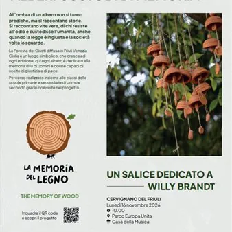

lun 16 nov · dalle 10:00
La memoria del legno 4 - Intitolazione albero a Willy Brandt
Evento conclusivo di intitolazione di un albero custode di memoria, a cura di alcune classi della scuola secondaria di primo grado coinvolte nel progetto. Con la partecipazione delle Istituzioni e del Consiglio dei Giovani dell'IC di Cervignano del Friuli. Lunedì 16 novembre…
 Indicazioni
Indicazioni
- Costi e prenotazioni
- Costo non indicato · Prenotazione non indicata
- Programma
- Programma da verificare. Apri la fonte ufficiale per orari e possibili aggiornamenti.
- In caso di maltempo
- Nessuna indicazione specifica pubblicata.
- Note
- Acquisito automaticamente dalla fonte.
L’EVENTO
Descrizione completa
Evento conclusivo di intitolazione di un albero custode di memoria, a cura di alcune classi della scuola secondaria di primo grado coinvolte nel progetto.
Con la partecipazione delle Istituzioni e del Consiglio dei Giovani dell'IC di Cervignano del Friuli.
Lunedì 16 novembre 2026 alle ore 10.00 al Parco Europa Unita, in una giornata speciale, la Giornata internazionale dei diritti dell'Infanzia e dell'adolescenza, intitolazione di un albero a Willy Brandt, l'ex cancelliere della Germania Ovest ricordato per i suoi gesti di pace e riconciliazione storica, in particolare per la celebre Kniefall von Warschau (l'inginocchiamento spontaneo del 7 dicembre 1970 davanti al monumento agli eroi del Ghetto di Varsavia).
L'evento si colloca nell'ambito del più ampio progetto, giunto alla quarta edizione, realizzato grazie alla collaborazione con le Biblioteche e le Amministrazioni comunali e alla partnership con Gariwo Network, in cui le classi coinvolte hanno potuto seguire il percorso tra storia e libri facendo crescere così la Foresta diffusa dei Giusti del Friuli Venezia Giulia, un luogo simbolico, che cresce ad ogni edizione dove ogni albero è dedicato ala memoria viva di uomini e donne capaci di scelte di giustizia e di pace. All’ombra di un albero non si fanno prediche, ma si raccontano storie. Si raccontano vite vere, di chi resiste all’odio e custodisce l’umanità, anche quando la legge è ingiusta e la società volta lo sguardo.
Un progetto che unisce rispetto per l'ambiente e memoria di impegno civile, che promuove l’incontro tra divulgazione scientifica, narrazione e letteratura per i più giovani, osservando l’ambiente attraverso i diritti umani e costruendo relazioni diverse tra noi e con il mondo.
Tutti sono invitati a partecipare
IL PROGRAMMA
Programma e orari
Appuntamenti raccolti dalle fonti elencate. Dove manca un orario, non è ancora disponibile in questa scheda.
Programma pubblicato
- Dal 2026-11-16 al 2026-11-16
INFORMAZIONI UTILI
Prima di partire
- Controllare la fonte prima di partire.
ORGANIZZAZIONE